實驗主題：完成四級 Pipeline THUMB CPU，從 RTL / Gate-Level Simulation，延伸至 Synthesis、STA、APR、DRC 與 LVS。整理依據為本人《HDL HW3 Pipelined THUMB CPU》作業報告初稿。
01 / 四級 Pipeline 架構
這次將 THUMB CPU 劃分成 IF（Instruction Fetch）、ID（Instruction Decode）、EX（Execute）、WB（Write Back） 四個 Pipeline Stage，並各自封裝成獨立模組，方便觀察各 Stage 的 Critical Path。
| Stage | 模組 | 主要工作 |
|---|---|---|
| IF | s1 / thumb_if |
取指令 |
| ID | s2 / thumb_id |
解碼指令 |
| EX | s3 / thumb_ex |
執行運算 |
| WB | s4 / thumb_wb |
寫回結果 |
02 / RTL 與 Gate-Level Simulation
使用既有 Testbench 檢查時脈、重置、記憶體存取及 Stage 間資料傳遞。驗證目標包含指定的資料位址 0x100 與資料值 0x24。除了比較 RTL 與 Gate-Level 波形，還需要確認 Testbench 最後的判定訊息。
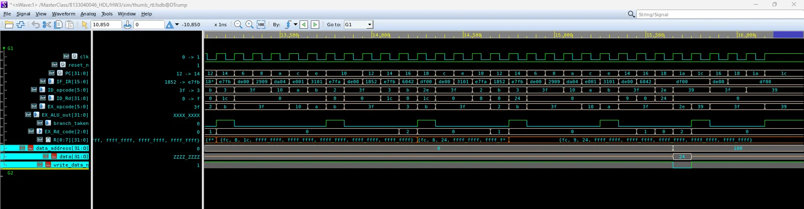
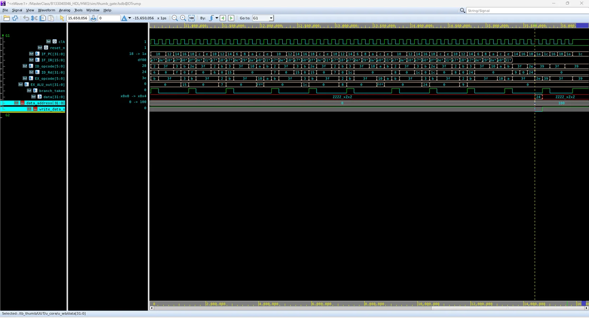
03 / Synthesis 與 Timing Analysis
依照老師要求，使用 Area-opt、Delay-opt、In-between 三種條件比較 DC 合成結果，再以 PrimeTime 分析功耗。報告中保存的早期比較資料顯示，Delay-opt 的面積較 Area-opt 大，但 Critical Delay 較短，反映硬體資源與速度之間的取捨。
資料狀態提醒：原始 HW3 報告已註明，三組 DC/PT PPA 表格與部分截圖為先前執行的資料，尚需和最終 RTL、Gate Netlist 版本核對。這裡將其保留為實驗紀錄，不當作最後同版量測結論。
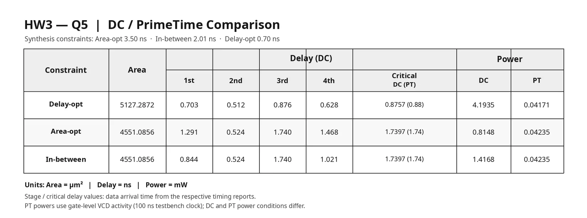
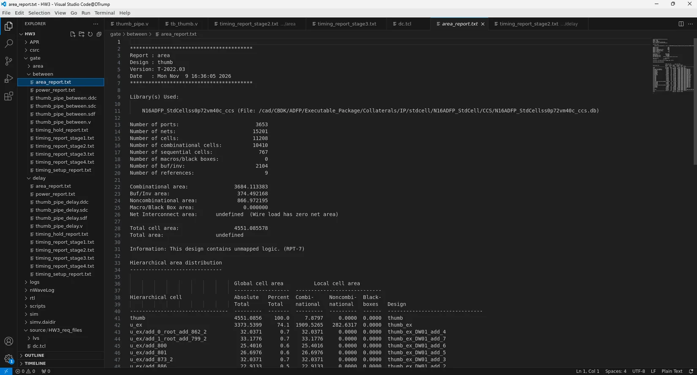
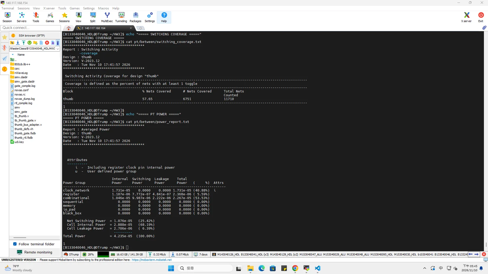
04 / APR 與 Setup / Hold
APR 流程使用 Innovus，包含 Floorplan、Placement、Clock Tree Synthesis、Routing 與 Timing Optimization。最終 Post-Route Timing Report 記錄：
| 指標 | 最終 APR 結果 |
|---|---|
| Setup WNS | +0.780 ns |
| Hold WNS | +0.007 ns |
| Setup / Hold TNS | 0.000 ns |
| Violating Paths | 0 |
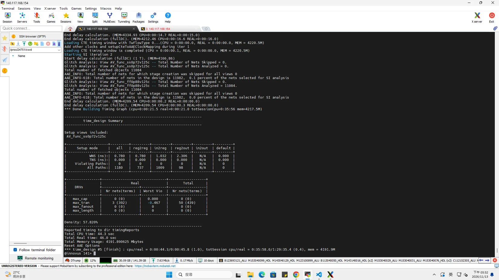
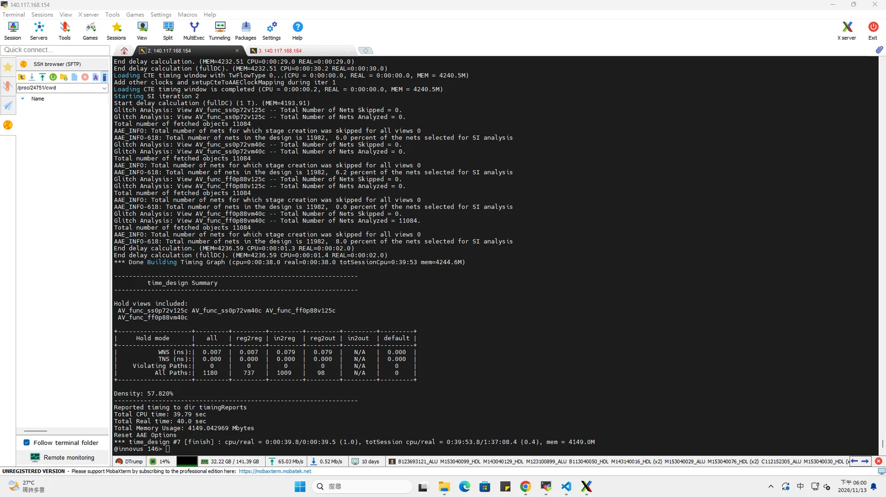
這次學到要區分 Setup 與 Hold 的檢查意義，並確認數值是在實體設計的哪個階段取得。
05 / DRC 與 LVS：最重要的排錯經驗
詳細繞線之後曾遇到 DRC Short，完成修正後，檢查結果為 Verification Complete：0 Violations。
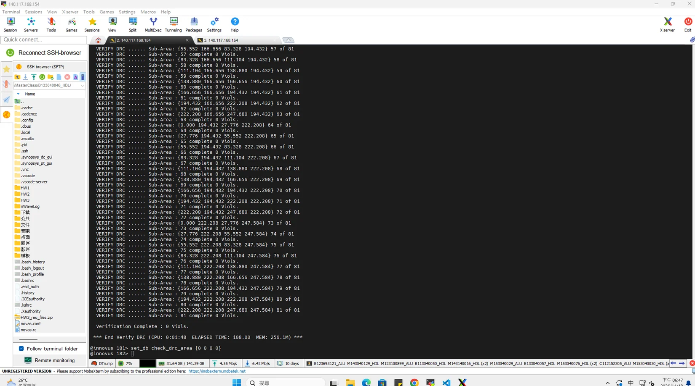
第一次 LVS 顯示 INCORRECT，原因是 Layout 中有 6,593 顆 DCAP，但 Source Netlist 中未對應到。後來根據更新的 write_netlist.tcl 調整 Physical Cell 的輸出方式，重新產生 PG Netlist、V2LVS 並執行 Calibre LVS，最後得到 CORRECT。
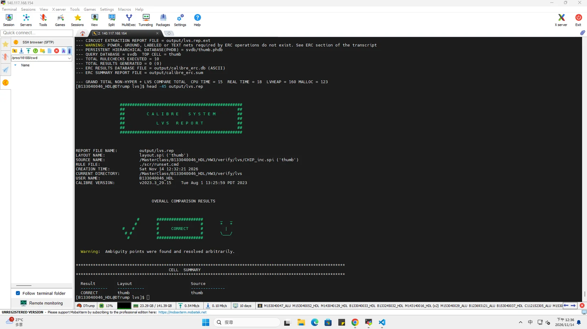
這段經驗讓我理解：LVS 不一致的來源可能是 Netlist 與 Physical-Only Cells 的對應問題，未必是 RTL 功能錯誤。
06 / Physical Layout 與 Module Highlight
下圖是完成 APR 後的 Layout 與四個 Pipeline Stage 的 Highlight。實體設計中的 Cell Placement 會依據走線、擁塞與 Timing 安排位置，因此 RTL 裡的四個邏輯模組，在 Layout 裡可能互相交錯。
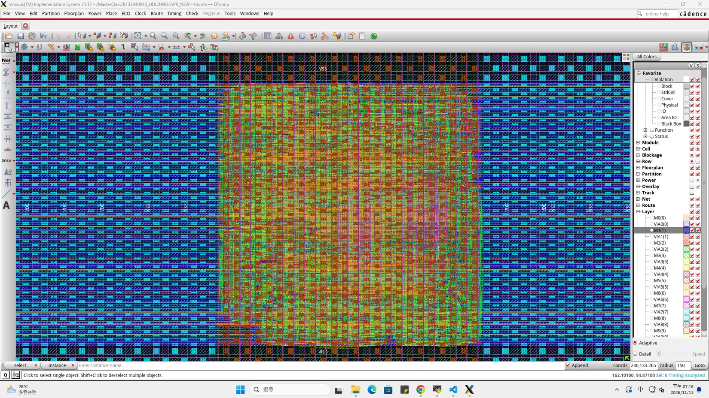
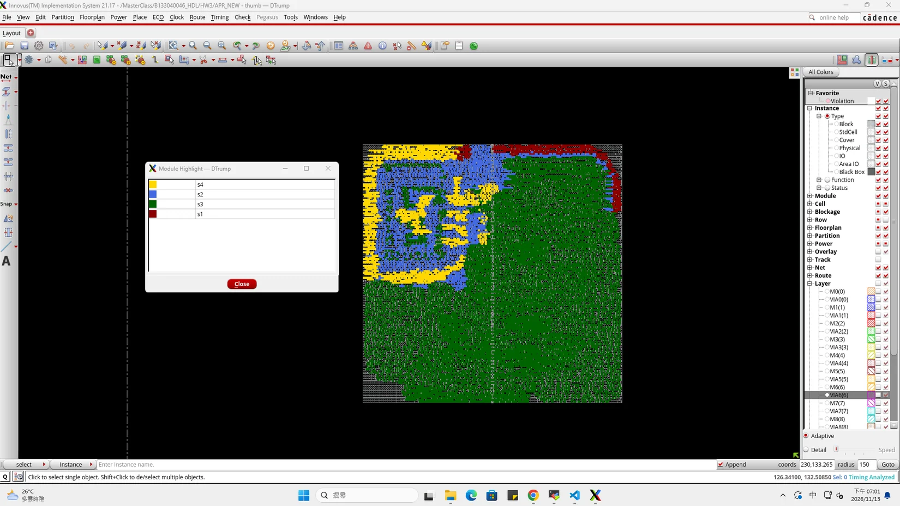
07 / 學習心得
這次真正將流程從 RTL → Simulation → Synthesis → STA → APR → DRC / LVS 串起來。功能模擬正確後，實體設計仍要完成繞線、時序與電路比對。HW3 最值得記下的是 LVS 修正：由報告內容追查 Physical Cell 與 Netlist 的差異，讓我第一次比較完整地理解 Signoff 階段在做什麼。
資料來源：本人 HDL HW3 報告初稿，整理日期 2026-11-14。部分 DC/PT PPA 結果尚待同版核對；已完成的 APR、DRC、LVS 結果據該報告記錄。